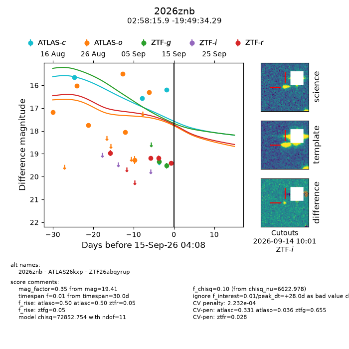
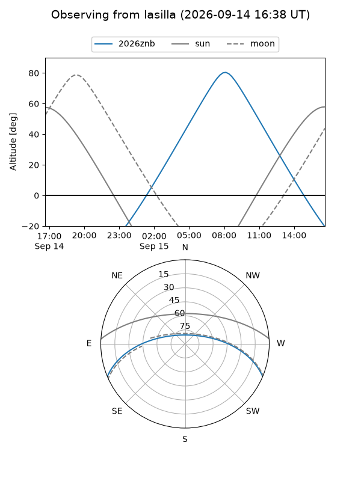
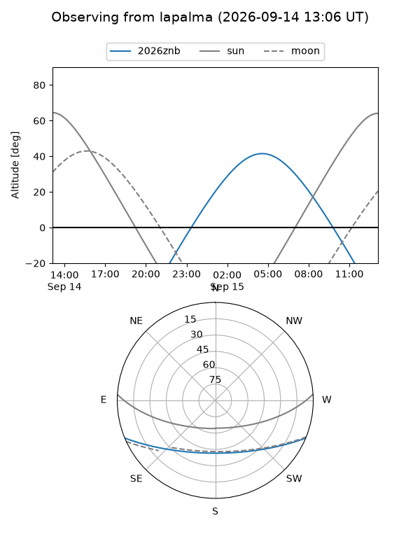
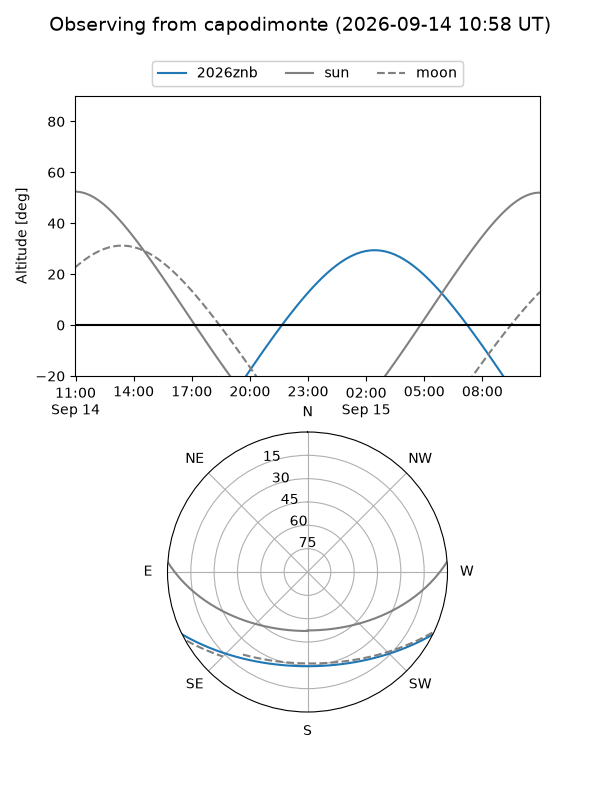
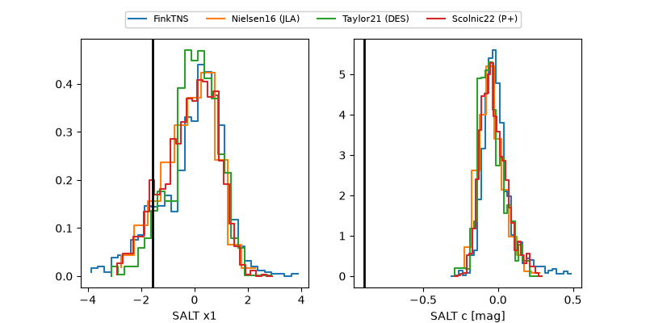

2026znb
Target 2026znb at 2026-09-15 04:10
Aliases and brokers:
FINK-ZTF: ztf.fink-portal.org/ZTF26abqyrup
Lasair-ZTF: lasair-ztf.lsst.ac.uk/objects/ZTF26abqyrup
ALeRCE-ZTF: alerce.online/object/ZTF26abqyrup
YSE-PZ: ziggy.ucolick.org/yse/transient_detail/2026znb
TNS name: wis-tns.org/object/2026znb
Direct TNS query: direct search
alt names
ZTF26abqyrup (ztf,fink_ztf)
2026znb (tns,yse)
ATLAS26kxp (atlas)
Coordinates:
equatorial (ra, dec) = 44.5663,-19.82619
equatorial (HMS+DMS) = 02:58:15.91,-19:49:34.29
galactic (l, b) = (205.6614,-60.10399)
Flags:
TNS type: nan
peak dt: +28.0
likely cv: !!
Photometry:
last atlasc=16.20, atlaso=16.30, ztfg=19.52, ztfr=19.41
3 atlasc, 7 atlaso, 2 ztfg, 4 ztfr detections
Lightcurve

Visibility



Additional plots
